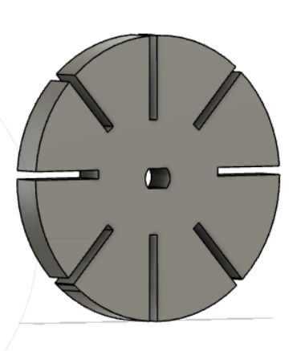

### Week 3: Hand tools and Fabrication
Hello there and welcome to the end of week 3,
For this third week, we were asked to create a kinetic sculpture, and include circuitry to move your sculpture.
I decide to work on a water mill operated by a DC motor.
To construct this structure, I used recycled popsicles found in the lab and fabricated buckets-like containers that I attached to the end of the popsticles. I made a total of 8 of them. I could have made more, but I did not want to overload the structure and make it hard for the motor to spin the whole will around. I used acrylic for the buckets, but wood could've worked fine as well. Although acrylic is better for water related projects since it's waterproof. I attached the sides of my boxes/buckets with hotglue.
One of the major setbacks was figuring out the dimensions as well as finding a way of connecting the motor to the wheel. In order to solve the latter, I decided to go with a hole in the wheel in the shape of the motor shaft instead of going for a circle as I had done before. In order to create the shape of the shaft, I first drew a circle with the diameter equal to the longest side of the shaft which was about 5.1 mm then I inscribed a rectangle with one side equal to the smallest side of the side which was about 3.4m then I trimmed the remaining parts to be reproduce this shape.

As for the dimensions of the buckets. I had to go with the second iteration because I had made shorter walls during my first iteration which was not ideal if I wanted the buckets to hold some water. I decided to make the base equal to 1 inch by 1 inch and made sure that on my sketch I made it 12.4 longer in width and length to account for the thickness of the acrylic that was going to serve as the walls of the buckets. The walls were made out of 4 sides with only 2 sharing the same dimensions, so they can fit into each other perfectly.
But the hardest issue I ran into was figuring out the circuitry. I had initially tested out that the wheel worked using one of the power boxes provided in the lab, but connecting it to my circuit turned out to be a hard task.
Finally, the other difficulty was building a stand for the motor to stand on its own and for the structure to be fully functional without the use of my hands. I initially was going for an L shaped stand, but sticking two thick pieces of wood together turned out to be more complicated than I expected. I tried drilling a hole to place a nail through both pieces that form the L shape in vain. The wood glue (or hot glue or superglue for that matter) was of no help either.
I ended up running out of time, and for the video attached here below, you can see the water mill working when I placed it in a bassin of water, but I wanted a different kind of support instead of my hand.
<img src="firsttrial.mp4">
In this other video, you can see Rob holding the motor after he successfully helped me connect the motor to the breadboard.
Future iterations:
- Create a press-fit construction for the buckets instead of using hotglue.
- Create a better support for the motor to stand on its own.
- Make it less bulky.
- Change the direction of the buckets on the wheel because it's currently spinning in the wrong direction.
- Encage pieces that could be damaged if put in contact with water.
- Elongate the shaft connecting the wheel to the motor to prevent popsicles from colliding with the motor.
- Give myself several days to start the assignment.
This week's shoutout goes to:
Rob for helping me build the circuit and Sephora for suggesting using nails to stick the pieces of wood together.